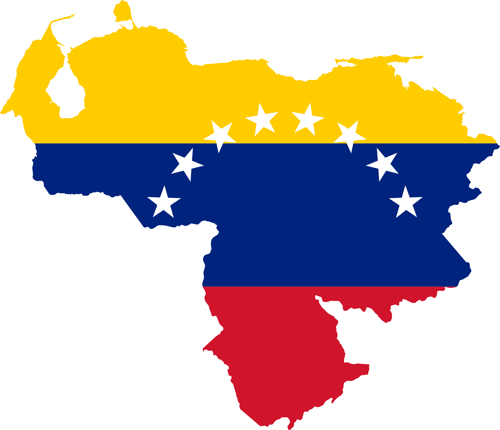

Información
MetroCaracas

Somos una compañía que tiene como objetivo transportar ciudadanos y ciudadanas, a través de un Sistema Metropolitano de Transporte conformado por el Sistema Ferroviario Metropolitano (Metro), el Sistema de Transporte Superficial (Metrobús), el Sistema Teleférico (Metrocable) o cualquier otra modalidad, con una organización apegada a los principios y valores de nuestra sociedad, prestando un servicio integrado, solidario y de calidad, que considere el respeto a la dignidad del ser humano y contribuya a elevar la calidad de vida de los habitantes de la Gran Caracas.